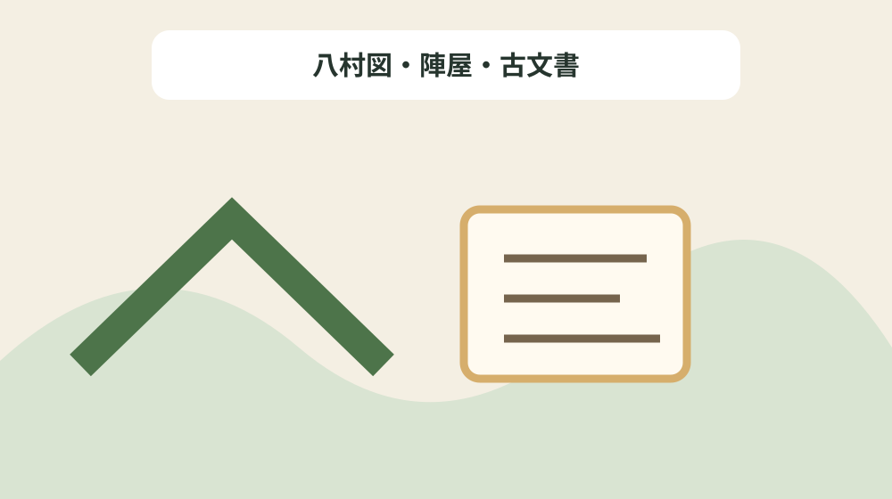
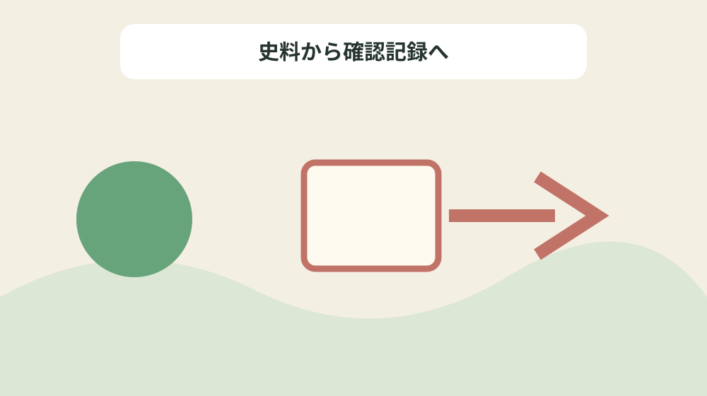

旗本土屋氏の八か村支配を村名・役職・文書で引く
結論：支配村、役職、年次、文書名、所蔵を一行ずつ整理することで、資料の記載と現在の状態を混同しない土屋氏八か村文書索引になります。
土屋氏八か村文書索引で解く問い
森町公式資料には「土屋逵直(みちなお)は、1679年(延宝7年)8月7日、高3483石余を現在の森町内の旧8ヵ村(森町村・天宮村・橘村・草ヶ谷村・粟倉村・上河原村・中田村・石川村)に充てられ、同家の当主が代々幕末まで知行(ちぎょう)した。」と記されています。旗本土屋氏の八か村支配を村名・役職・文書で引くでは、この記載を土屋氏八か村文書索引の一行にし、支配村、役職、年次、文書名、所蔵を一行ずつ整理するための根拠として扱います。資料名と確認日を先に書き、後から説明だけが独り歩きしないようにします。
同じページで確認できる「幕末には、土屋惣蔵の領有高は3552石余りに増加し、安政6年の陣屋に貢納された1418石は金1450両に相当する。」は、前の事実と似ていても別の対象です。八村図・陣屋・古文書を読み解くときは、資料の掲載順ではなく、名称・年代・場所・根拠の対応を見ます。写真、家族の記憶、公的資料を三列に分け、食い違いを未確認として残します。
土屋氏八か村文書索引では「知行地の陣屋は、当初草ヶ谷村(陣屋敷)に置かれ、享保6年から9年の間に西脇に移されているが、これは、町場の発展に伴って市街地の近くに置く必要があったからであろう。」の確認欄と「土屋氏は、森町村に隣接する三千石余の地域を一括して知行したわけだが、これは、先祖土屋忠直が阿茶局の養子であり、鋳物師山田七郎左衛門は阿茶局の身内と言われるなど、森町が土屋氏にとって有縁の土地であったことによるものであろう。」の照会欄を分けます。公式本文が述べていない現況や公開可否は未確認と書き、家族の記憶には話者と聞取日を添えます。旧記録を消さず、回答日と確認先を付けた新しい行を追加します。
公式本文から確定できる十二事実
森町公式資料には「神谷・加藤・野尻・太田・山中・山田・北嶋・柚木(ゆぎ)・中村・松井の各氏は記録にみえる地代官(じだいかん)である。」と記されています。旗本土屋氏の八か村支配を村名・役職・文書で引くでは、この記載を土屋氏八か村文書索引の一行にし、支配村、役職、年次、文書名、所蔵を一行ずつ整理するための根拠として扱います。主語と対象を原文へ戻し、似た地名や人物を同じものとして扱いません。
同じページで確認できる「(3)西脇陣屋間取り図。江戸から派遣された代官も町場に居住して陣屋に通っていた。 (旧山田家文書)」は、前の事実と似ていても別の対象です。八村図・陣屋・古文書を読み解くときは、資料の掲載順ではなく、名称・年代・場所・根拠の対応を見ます。資料の利点は典拠へ戻れることにあり、現在の状態を保証するものではありません。
土屋氏八か村文書索引では「幕末には、土屋惣蔵の領有高は3552石余りに増加し、安政6年の陣屋に貢納された1418石は金1450両に相当する。」の確認欄と「(4)土屋氏代官北嶋仲右衛門家長屋門。幕末財政を支えるため地代官に取り立てられた仲右衛門は、毎月の用達金や臨時用達金などを支出した。 この門は当時のもので、町指定文化財になっている。 (森町円田 個人所蔵)」の照会欄を分けます。公式本文が述べていない現況や公開可否は未確認と書き、家族の記憶には話者と聞取日を添えます。不動産の道路、境界、登記、建物安全性は、この歴史資料とは別に調べます。
土屋氏八か村文書索引の列を決める
森町公式資料には「土屋氏は、森町村に隣接する三千石余の地域を一括して知行したわけだが、これは、先祖土屋忠直が阿茶局の養子であり、鋳物師山田七郎左衛門は阿茶局の身内と言われるなど、森町が土屋氏にとって有縁の土地であったことによるものであろう。」と記されています。旗本土屋氏の八か村支配を村名・役職・文書で引くでは、この記載を土屋氏八か村文書索引の一行にし、支配村、役職、年次、文書名、所蔵を一行ずつ整理するための根拠として扱います。年号の横へ出来事を示す動詞を残し、制作年と伝来年を一つにしません。
同じページで確認できる「神谷・加藤・野尻・太田・山中・山田・北嶋・柚木(ゆぎ)・中村・松井の各氏は記録にみえる地代官(じだいかん)である。」は、前の事実と似ていても別の対象です。八村図・陣屋・古文書を読み解くときは、資料の掲載順ではなく、名称・年代・場所・根拠の対応を見ます。不足する情報を空欄の理由として残し、推測で表を完成させません。
土屋氏八か村文書索引では「図−23 八ヵ村区分図。(『掛川史』中巻より)」の確認欄と「彼等の役目は、陣屋の御用金の負担、御蔵米の払い出し、年貢収取、年貢米の地払い、江戸屋敷への送金や連絡、財政運営、陣屋の賄(まかな)い、知行地内の寺社への代参、村々の巡回と村役人の統括など、多岐にわたっている。」の照会欄を分けます。公式本文が述べていない現況や公開可否は未確認と書き、家族の記憶には話者と聞取日を添えます。まだ売ると決めていない段階でも、資料の所在と根拠を家族で共有できます。

年代の種類を動詞で分ける
森町公式資料には「(2)土屋逵直書状。(森町森 蓮華寺所蔵)」と記されています。旗本土屋氏の八か村支配を村名・役職・文書で引くでは、この記載を土屋氏八か村文書索引の一行にし、支配村、役職、年次、文書名、所蔵を一行ずつ整理するための根拠として扱います。所在地が示されても見学可能とは限らないため、公開条件を別に確認します。
同じページで確認できる「図−23 八ヵ村区分図。(『掛川史』中巻より)」は、前の事実と似ていても別の対象です。八村図・陣屋・古文書を読み解くときは、資料の掲載順ではなく、名称・年代・場所・根拠の対応を見ます。問い合わせは対象名、参照ページ、確認済みの事実、知りたい一点に絞ります。
土屋氏八か村文書索引では「(4)土屋氏代官北嶋仲右衛門家長屋門。幕末財政を支えるため地代官に取り立てられた仲右衛門は、毎月の用達金や臨時用達金などを支出した。 この門は当時のもので、町指定文化財になっている。 (森町円田 個人所蔵)」の確認欄と「(2)土屋逵直書状。(森町森 蓮華寺所蔵)」の照会欄を分けます。公式本文が述べていない現況や公開可否は未確認と書き、家族の記憶には話者と聞取日を添えます。最初の一行から始め、十二事実を同時に確定しようとしないことが継続の要点です。
場所・所蔵・公開条件を混同しない
森町公式資料には「土屋逵直(みちなお)は、1679年(延宝7年)8月7日、高3483石余を現在の森町内の旧8ヵ村(森町村・天宮村・橘村・草ヶ谷村・粟倉村・上河原村・中田村・石川村)に充てられ、同家の当主が代々幕末まで知行(ちぎょう)した。」と記されています。旗本土屋氏の八か村支配を村名・役職・文書で引くでは、この記載を土屋氏八か村文書索引の一行にし、支配村、役職、年次、文書名、所蔵を一行ずつ整理するための根拠として扱います。写真、家族の記憶、公的資料を三列に分け、食い違いを未確認として残します。
同じページで確認できる「土屋家は、義家流足利支流の一色氏で武田家に仕え、 惣蔵 ( そうぞう ) 平三郎(忠直)は清見寺で家康に取立てられ、 阿茶局 ( あちゃのつぼね ) の養子となり、以来徳川家に仕えている。」は、前の事実と似ていても別の対象です。八村図・陣屋・古文書を読み解くときは、資料の掲載順ではなく、名称・年代・場所・根拠の対応を見ます。旧記録を消さず、回答日と確認先を付けた新しい行を追加します。
土屋氏八か村文書索引では「知行地の陣屋は、当初草ヶ谷村(陣屋敷)に置かれ、享保6年から9年の間に西脇に移されているが、これは、町場の発展に伴って市街地の近くに置く必要があったからであろう。」の確認欄と「知行地の陣屋は、当初草ヶ谷村(陣屋敷)に置かれ、享保6年から9年の間に西脇に移されているが、これは、町場の発展に伴って市街地の近くに置く必要があったからであろう。」の照会欄を分けます。公式本文が述べていない現況や公開可否は未確認と書き、家族の記憶には話者と聞取日を添えます。資料名と確認日を先に書き、後から説明だけが独り歩きしないようにします。
良い点
森町公式資料には「神谷・加藤・野尻・太田・山中・山田・北嶋・柚木(ゆぎ)・中村・松井の各氏は記録にみえる地代官(じだいかん)である。」と記されています。旗本土屋氏の八か村支配を村名・役職・文書で引くでは、この記載を土屋氏八か村文書索引の一行にし、支配村、役職、年次、文書名、所蔵を一行ずつ整理するための根拠として扱います。資料の利点は典拠へ戻れることにあり、現在の状態を保証するものではありません。
同じページで確認できる「土屋氏は、森町村に隣接する三千石余の地域を一括して知行したわけだが、これは、先祖土屋忠直が阿茶局の養子であり、鋳物師山田七郎左衛門は阿茶局の身内と言われるなど、森町が土屋氏にとって有縁の土地であったことによるものであろう。」は、前の事実と似ていても別の対象です。八村図・陣屋・古文書を読み解くときは、資料の掲載順ではなく、名称・年代・場所・根拠の対応を見ます。不動産の道路、境界、登記、建物安全性は、この歴史資料とは別に調べます。
土屋氏八か村文書索引では「幕末には、土屋惣蔵の領有高は3552石余りに増加し、安政6年の陣屋に貢納された1418石は金1450両に相当する。」の確認欄と「(1)森町村外七ヵ村西脇陣屋絵図写。(個人所蔵)」の照会欄を分けます。公式本文が述べていない現況や公開可否は未確認と書き、家族の記憶には話者と聞取日を添えます。主語と対象を原文へ戻し、似た地名や人物を同じものとして扱いません。
注文したい点
森町公式資料には「土屋氏は、森町村に隣接する三千石余の地域を一括して知行したわけだが、これは、先祖土屋忠直が阿茶局の養子であり、鋳物師山田七郎左衛門は阿茶局の身内と言われるなど、森町が土屋氏にとって有縁の土地であったことによるものであろう。」と記されています。旗本土屋氏の八か村支配を村名・役職・文書で引くでは、この記載を土屋氏八か村文書索引の一行にし、支配村、役職、年次、文書名、所蔵を一行ずつ整理するための根拠として扱います。不足する情報を空欄の理由として残し、推測で表を完成させません。
同じページで確認できる「(4)土屋氏代官北嶋仲右衛門家長屋門。幕末財政を支えるため地代官に取り立てられた仲右衛門は、毎月の用達金や臨時用達金などを支出した。 この門は当時のもので、町指定文化財になっている。 (森町円田 個人所蔵)」は、前の事実と似ていても別の対象です。八村図・陣屋・古文書を読み解くときは、資料の掲載順ではなく、名称・年代・場所・根拠の対応を見ます。まだ売ると決めていない段階でも、資料の所在と根拠を家族で共有できます。
土屋氏八か村文書索引では「図−23 八ヵ村区分図。(『掛川史』中巻より)」の確認欄と「土屋逵直(みちなお)は、1679年(延宝7年)8月7日、高3483石余を現在の森町内の旧8ヵ村(森町村・天宮村・橘村・草ヶ谷村・粟倉村・上河原村・中田村・石川村)に充てられ、同家の当主が代々幕末まで知行(ちぎょう)した。」の照会欄を分けます。公式本文が述べていない現況や公開可否は未確認と書き、家族の記憶には話者と聞取日を添えます。年号の横へ出来事を示す動詞を残し、制作年と伝来年を一つにしません。
対案・結論
森町公式資料には「(2)土屋逵直書状。(森町森 蓮華寺所蔵)」と記されています。旗本土屋氏の八か村支配を村名・役職・文書で引くでは、この記載を土屋氏八か村文書索引の一行にし、支配村、役職、年次、文書名、所蔵を一行ずつ整理するための根拠として扱います。問い合わせは対象名、参照ページ、確認済みの事実、知りたい一点に絞ります。
同じページで確認できる「彼等の役目は、陣屋の御用金の負担、御蔵米の払い出し、年貢収取、年貢米の地払い、江戸屋敷への送金や連絡、財政運営、陣屋の賄(まかな)い、知行地内の寺社への代参、村々の巡回と村役人の統括など、多岐にわたっている。」は、前の事実と似ていても別の対象です。八村図・陣屋・古文書を読み解くときは、資料の掲載順ではなく、名称・年代・場所・根拠の対応を見ます。最初の一行から始め、十二事実を同時に確定しようとしないことが継続の要点です。
土屋氏八か村文書索引では「(4)土屋氏代官北嶋仲右衛門家長屋門。幕末財政を支えるため地代官に取り立てられた仲右衛門は、毎月の用達金や臨時用達金などを支出した。 この門は当時のもので、町指定文化財になっている。 (森町円田 個人所蔵)」の確認欄と「幕末には、土屋惣蔵の領有高は3552石余りに増加し、安政6年の陣屋に貢納された1418石は金1450両に相当する。」の照会欄を分けます。公式本文が述べていない現況や公開可否は未確認と書き、家族の記憶には話者と聞取日を添えます。所在地が示されても見学可能とは限らないため、公開条件を別に確認します。

家族に残す確認記録
森町公式資料には「土屋逵直(みちなお)は、1679年(延宝7年)8月7日、高3483石余を現在の森町内の旧8ヵ村(森町村・天宮村・橘村・草ヶ谷村・粟倉村・上河原村・中田村・石川村)に充てられ、同家の当主が代々幕末まで知行(ちぎょう)した。」と記されています。旗本土屋氏の八か村支配を村名・役職・文書で引くでは、この記載を土屋氏八か村文書索引の一行にし、支配村、役職、年次、文書名、所蔵を一行ずつ整理するための根拠として扱います。旧記録を消さず、回答日と確認先を付けた新しい行を追加します。
同じページで確認できる「(2)土屋逵直書状。(森町森 蓮華寺所蔵)」は、前の事実と似ていても別の対象です。八村図・陣屋・古文書を読み解くときは、資料の掲載順ではなく、名称・年代・場所・根拠の対応を見ます。資料名と確認日を先に書き、後から説明だけが独り歩きしないようにします。
土屋氏八か村文書索引では「知行地の陣屋は、当初草ヶ谷村(陣屋敷)に置かれ、享保6年から9年の間に西脇に移されているが、これは、町場の発展に伴って市街地の近くに置く必要があったからであろう。」の確認欄と「(3)西脇陣屋間取り図。江戸から派遣された代官も町場に居住して陣屋に通っていた。 (旧山田家文書)」の照会欄を分けます。公式本文が述べていない現況や公開可否は未確認と書き、家族の記憶には話者と聞取日を添えます。写真、家族の記憶、公的資料を三列に分け、食い違いを未確認として残します。
現地確認と権利資料を分ける
森町公式資料には「神谷・加藤・野尻・太田・山中・山田・北嶋・柚木(ゆぎ)・中村・松井の各氏は記録にみえる地代官(じだいかん)である。」と記されています。旗本土屋氏の八か村支配を村名・役職・文書で引くでは、この記載を土屋氏八か村文書索引の一行にし、支配村、役職、年次、文書名、所蔵を一行ずつ整理するための根拠として扱います。不動産の道路、境界、登記、建物安全性は、この歴史資料とは別に調べます。
同じページで確認できる「知行地の陣屋は、当初草ヶ谷村(陣屋敷)に置かれ、享保6年から9年の間に西脇に移されているが、これは、町場の発展に伴って市街地の近くに置く必要があったからであろう。」は、前の事実と似ていても別の対象です。八村図・陣屋・古文書を読み解くときは、資料の掲載順ではなく、名称・年代・場所・根拠の対応を見ます。主語と対象を原文へ戻し、似た地名や人物を同じものとして扱いません。
土屋氏八か村文書索引では「幕末には、土屋惣蔵の領有高は3552石余りに増加し、安政6年の陣屋に貢納された1418石は金1450両に相当する。」の確認欄と「神谷・加藤・野尻・太田・山中・山田・北嶋・柚木(ゆぎ)・中村・松井の各氏は記録にみえる地代官(じだいかん)である。」の照会欄を分けます。公式本文が述べていない現況や公開可否は未確認と書き、家族の記憶には話者と聞取日を添えます。資料の利点は典拠へ戻れることにあり、現在の状態を保証するものではありません。
大石の視点
森町公式資料には「土屋氏は、森町村に隣接する三千石余の地域を一括して知行したわけだが、これは、先祖土屋忠直が阿茶局の養子であり、鋳物師山田七郎左衛門は阿茶局の身内と言われるなど、森町が土屋氏にとって有縁の土地であったことによるものであろう。」と記されています。旗本土屋氏の八か村支配を村名・役職・文書で引くでは、この記載を土屋氏八か村文書索引の一行にし、支配村、役職、年次、文書名、所蔵を一行ずつ整理するための根拠として扱います。まだ売ると決めていない段階でも、資料の所在と根拠を家族で共有できます。
同じページで確認できる「(1)森町村外七ヵ村西脇陣屋絵図写。(個人所蔵)」は、前の事実と似ていても別の対象です。八村図・陣屋・古文書を読み解くときは、資料の掲載順ではなく、名称・年代・場所・根拠の対応を見ます。年号の横へ出来事を示す動詞を残し、制作年と伝来年を一つにしません。
土屋氏八か村文書索引では「図−23 八ヵ村区分図。(『掛川史』中巻より)」の確認欄と「図−23 八ヵ村区分図。(『掛川史』中巻より)」の照会欄を分けます。公式本文が述べていない現況や公開可否は未確認と書き、家族の記憶には話者と聞取日を添えます。不足する情報を空欄の理由として残し、推測で表を完成させません。
まとめ
森町公式資料には「(2)土屋逵直書状。(森町森 蓮華寺所蔵)」と記されています。旗本土屋氏の八か村支配を村名・役職・文書で引くでは、この記載を土屋氏八か村文書索引の一行にし、支配村、役職、年次、文書名、所蔵を一行ずつ整理するための根拠として扱います。最初の一行から始め、十二事実を同時に確定しようとしないことが継続の要点です。
同じページで確認できる「土屋逵直(みちなお)は、1679年(延宝7年)8月7日、高3483石余を現在の森町内の旧8ヵ村(森町村・天宮村・橘村・草ヶ谷村・粟倉村・上河原村・中田村・石川村)に充てられ、同家の当主が代々幕末まで知行(ちぎょう)した。」は、前の事実と似ていても別の対象です。八村図・陣屋・古文書を読み解くときは、資料の掲載順ではなく、名称・年代・場所・根拠の対応を見ます。所在地が示されても見学可能とは限らないため、公開条件を別に確認します。
土屋氏八か村文書索引では「(4)土屋氏代官北嶋仲右衛門家長屋門。幕末財政を支えるため地代官に取り立てられた仲右衛門は、毎月の用達金や臨時用達金などを支出した。 この門は当時のもので、町指定文化財になっている。 (森町円田 個人所蔵)」の確認欄と「土屋家は、義家流足利支流の一色氏で武田家に仕え、 惣蔵 ( そうぞう ) 平三郎(忠直)は清見寺で家康に取立てられ、 阿茶局 ( あちゃのつぼね ) の養子となり、以来徳川家に仕えている。」の照会欄を分けます。公式本文が述べていない現況や公開可否は未確認と書き、家族の記憶には話者と聞取日を添えます。問い合わせは対象名、参照ページ、確認済みの事実、知りたい一点に絞ります。
よくある質問
土屋氏八か村文書索引で最初に書く項目は何ですか。
資料名、対象名、確認日、根拠の種類です。支配村、役職、年次、文書名、所蔵を一行ずつ整理するため、現況と家族の記憶は別欄にします。
土屋氏八か村文書索引に所在地があれば現地を見学できますか。
掲載だけでは判断できません。土屋逵直(みちなお)は、1679年(延宝7年)8月7日、高3483石余を現在の森町内の旧8ヵ村(森町村・天宮村・橘村・草ヶ谷村・粟倉村・上河原村・中田村・石川村)に充てられ、同家の当主が代々幕末まで知行(ちぎょう)した。という記録は八村図・陣屋・古文書を読む根拠ですが、現在の公開日時や立入り条件の根拠ではありません。対象ごとに管理者の案内を確認します。
土屋氏八か村文書索引で年代が複数ある場合はどれを採用しますか。
知行地の陣屋は、当初草ヶ谷村(陣屋敷)に置かれ、享保6年から9年の間に西脇に移されているが、これは、町場の発展に伴って市街地の近くに置く必要があったからであろう。という記録を起点に、八村図・陣屋・古文書の制作、記録、移転、発見などの動作を分けます。異なる出来事の年は統合せず、それぞれの典拠を同じ行に残します。
家族の記憶は土屋氏八か村文書索引の公式事実と一緒に書けますか。
神谷・加藤・野尻・太田・山中・山田・北嶋・柚木(ゆぎ)・中村・松井の各氏は記録にみえる地代官(じだいかん)である。という公的記載とは別欄にします。八村図・陣屋・古文書について話した人、聞取日、確信度を書けば、家族の記憶を残しつつ公的資料へ上書きせず比較できます。
公式情報源
最終確認日：2026-08-18 ／ 公表事実と執筆者の解釈・意見を分けて記載しています。